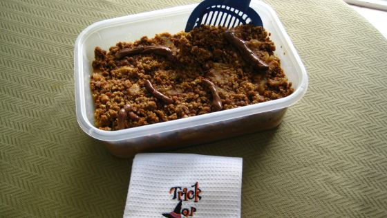
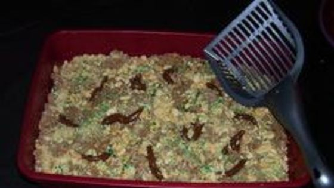

Cat Litter Cake

Okay okay, I know this looks like a cat shit box, but it's cake.
Ingredients
- 2 boxes of caramel flavored cake mix 18 oz
- 6 eggs
- 2/3 cup of oil
- 2 &2/3 cups of water
- 1 pack of vienna fingers (16 oz)
- 1 box chocolate pudding mix (6 oz)
- 12-16 small tootsie rolls
- 1 new kitty litter box
- Plastic poop scooper
- Green food dye
Directions
This cake is a bit intense, but results in a true Degenerate delicacy.
Prepare cake mixes and bake according to box instructions, using 9" x 13" pans. Let cool after cooking is finished.
Make pudding according to box instructions. Once completed, cover bowl in plastic wrap and chill in refrigerator.
Place vienna finger cookies in bag and crush with rolling pin until there's nothing but crumbled pieces.
Set aside 1/4 cup of cookie crumbs. Add a few drops of green food dye to the 1/4 cup and mix with fork.
Remove finished cakes from pans and crumble them into a large bowl.
Toss cake with half the remaining crush vienna finger cookie crumbs, along with the chilled pudding.
Mix gently with cake crumbs until evenly moist.
Put mixture into the "new" litter box, which somehow got lined with plastic wrap at some point...come on, keep up.
Unwrap tootsie rolls and microwave 3 of them for 30 seconds at a time on plate until soft. Once soft, taper them to look like cat shits.
Repeat tootsie roll cat shit project until you have enough cat shits to place throughout your cake.
Sprinkle remaining half of cookie crumbs over the top of cake. Then, scatter green cookie crumbs over top, which should resemble cat litter.
Bring this cake to a friends birthday party to lose all friends, or eat in public if you're curious to feel how soft those padded walls really are.
But seriously, does this not look delicious?!

Alternative Recipe (because ew)
Just go with the white russian my dude.
It's a delicious, degenerate milkshake at maybe a tenth of the effort and, once perfected, you can make a ton of them to drink until you forget all about the idea of a cat-shit-box cake.
Degenerate Recipes Home